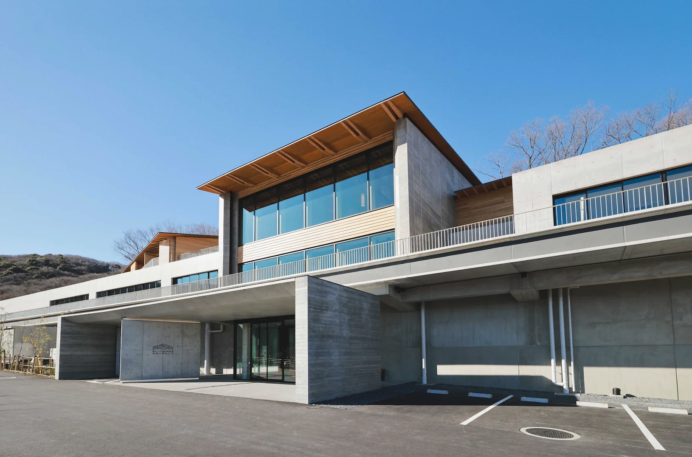
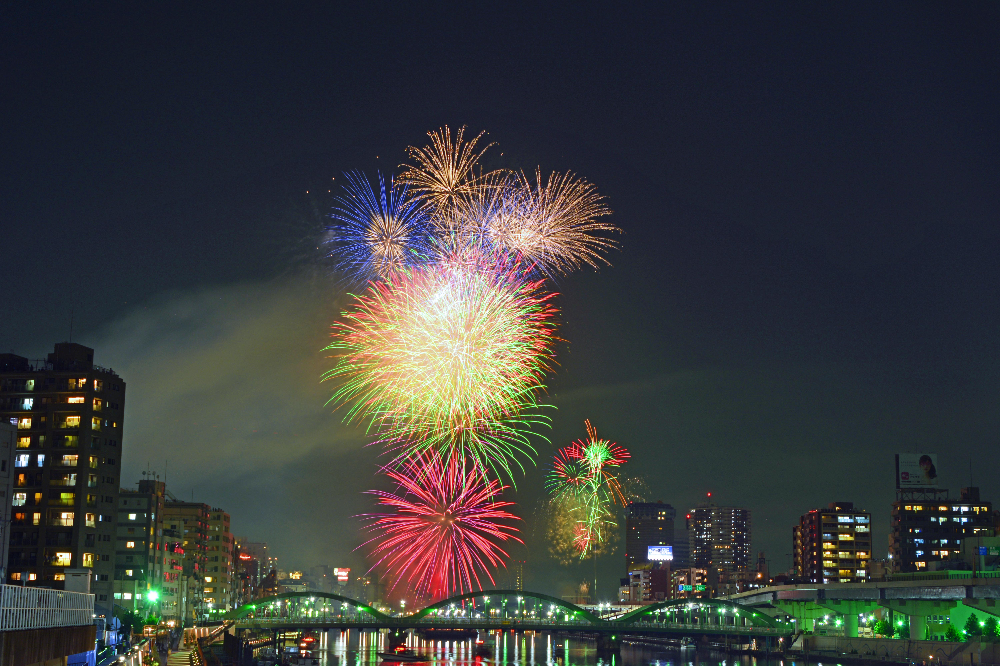
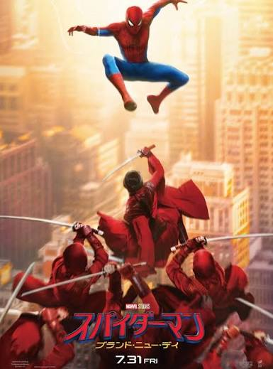

今年の夏休みは、部活の友達と一緒に栃木へ遊びに行ってきました 一番の思い出は、広くてきれいな体育館を貸し切ってやったバスケです。 みんなでトーナメントの1on1大会をやったり、3対2のミニゲームをやったりして、時間が一瞬で過ぎるくらいとても盛り上がりました。
たくさん動いてお腹が空いた後は、地元のおいしいラーメンを食べて休憩しました。 そのあとも体力が残っていてかつバスケに飽きたので、卓球やバレー、バドミントンまでやって全員でとにかく体を動かしました。 普段の練習とはまた違った楽しさで、部活のメンバーとの仲も深めることができました。



夜はみんなでお肉をたくさん焼いてBBQスタート！ デザートに作った焼きマシュマロがトロトロで最高においしかったです。 お腹いっぱいになった後はみんなで花火をやって、花火を友達とどっちが長く火種を落とさずに持てるかという勝負をしたときは夏休みって感じがして最高に楽しかったです。
お風呂から上がった後も、同じ部屋に集まって遊びました。 部屋に集まってカードゲームをやって大騒ぎしたり、部屋の電気を全部消して肝試しを始めたり。 夜遅くまでみんなで笑いっぱなしで、修学旅行の夜みたいでした。 部活の仲間達と過ごした、忘れられない夏の思い出になりました！